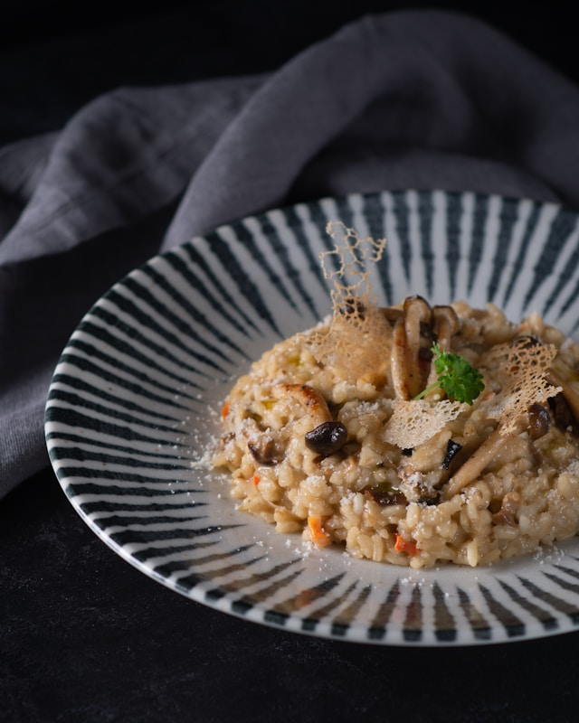

Mushroom Risotto

Description
Mushroom Risotto is a classic Italian rice dish made with Arborio rice, mushrooms, broth, butter, and Parmesan cheese. It is known for its creamy texture and rich, savory flavor.
The rice is cooked slowly by gradually adding warm broth, allowing it to absorb the liquid while releasing its natural starches, resulting in a smooth and comforting dish.
Ingredients
- 1½ cups Arborio rice
- 2 tablespoons butter
- 1 tablespoon olive oil
- 1 small onion, finely chopped
- 2 cloves garlic, minced
- 2 cups mushrooms, sliced (button or cremini)
- 4-5 cups vegetable or chicken broth, kept warm
- ½ cup grated Parmesan cheese
- ¼ cup heavy cream (optional)
- 2 tablespoons fresh parsley, chopped
- Salt to taste
- Black pepper to taste
Steps to Follow
- Heat the vegetable or chicken broth in a saucepan and keep it warm over low heat.
- In a large pan, heat the butter and olive oil over medium heat.
- Add the chopped onion and cook until soft and translucent. Stir in the minced garlic and cook for another minute.
- Add the sliced mushrooms and cook until they are tender and lightly browned.
- Stir in the Arborio rice and cook for 2-3 minutes, allowing the rice to become lightly toasted.
- Add one ladle of warm broth to the rice and stir continuously until most of the liquid is absorbed.
- Continue adding the broth one ladle at a time, stirring frequently and allowing each addition to be absorbed before adding more. Repeat until the rice is creamy and tender, about 18–20 minutes.
- Remove the pan from the heat and stir in the Parmesan cheese and heavy cream (if using). Season with salt and black pepper to taste.
- Garnish with fresh parsley and serve immediately while hot.
Go Back to Home Page